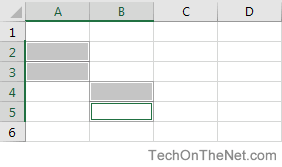

In Microsoft Excel, a range is a collection of cells. A range can be 2 or more cells and those cells don't necessarily have to be adjacent to each other. Let's look at some examples to quickly demonstrate the different types of ranges.
This vertical range is A2:A5. In this example, if you had selected the entire column A, the range would be A:A.
This horizontal range is A2:C2. In this example, if you selected the entire row 2, the range would have be 2:2.
This mixed range is A2:C5. This is a collection of cells that can be from multiple rows and columns.
This multiple selection range is A2:A3,B4:B5. This is a collection of cells that does not have to be adjacent.

Each range has its own set of coordinates or position in the worksheet such as A2:A5, A2:C2, A2:C5, and so on.
There are many things that you can do with ranges in Excel such as copying, moving, formatting, and naming ranges.